Hello all !!!
I welcome you all to Engineers Point Pneumatics page. Pneumatics play important role in automation.
Many a
times pneumatics is used as drive unit for automation system. If you follow the content of this page
you will
be able to design pure pneumatic Circuits and also make automation with ease. You can also see
topics like
Pneumatic control elements, Pneumatic Advantages and disadvantages, Pneumatic circuit,
Cylinder Force calculation etc. So make sure you read these topic and get you
problems solved.
Pneumatic system work on compressed pneumatic air. This compressed is used in pneumatic cylinder, motors and other drives. Pneumatic Cylinder is of low cost and very easy for installation. It has simple construction and available in various dimensions. This cylinder is used in machines for clamping, shifting, positioning, material flow branching, etc. Other applications include packaging, filing, locking, sorting, stamping, and many more. Machine like CNC, Drilling, Turning, Sawing, Forming use pneumatic system widely. The Advantages and disadvantages of pnuematic system are defined below:
Pneumatic components can be classified into supply elements, signal elements, processing element, adjusting elements and power outputs. Pneumatic componenets are designed for maximun operating pressure of 8 to 10bar. There are some pressure loss from distribution system till operating system, hence we get 6 to 7 bar pressure.
Supply element are compressors where the air is prepared. The air from environment is cleaned
Another supply element type is FRL(Filter Regulator Lubricator ). It's main task is to filter the air coming from resrvoirs or compressor. It also regulates the pressure and adds some oil for lubricating the pneumatic components. Here it also performs the task of regulator as well as lubricator.
Symbol of pneumatic FRL is as below:
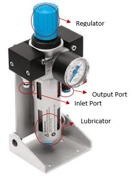
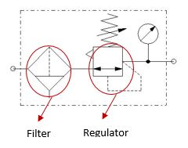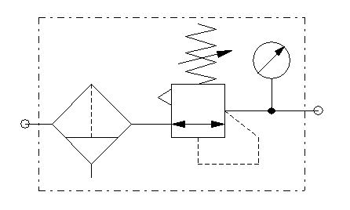

Pneumatic valves are used to control the pressure or flow rate of pressure media. Depending on structure valves are classified as Directiob Control Valves (DCV), Non-return valves, Flow control valves, Pressure control valves, shut-off valves.
Pneumatic direction control valves control the flow of air signal and perform task of generating, cancelling, of directing signals.
One can decribe valves as:
The image below has its ports marked. Three ports are circled red in color.
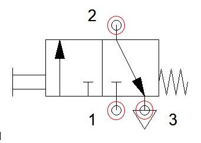

In below images you can see the square marking of images define the positions of valve. One images has 2 positions and other has 3.


| Symbol | Name |
|---|---|
 |
Pneumatic supply elements |
.JPG) |
Air service unit (FRL) |
|
Simplified FRL |
 |
singel acting spring return cylinder |
 |
Double acting cylinder |
| 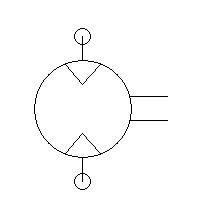 | Pneumatic Motor |
| 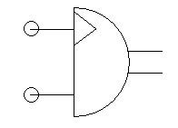 | Semi-rotary |
| 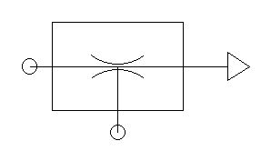 | Vaccum Generator |

|
3/2 way normally open direction control valve |

|
3/2 way normally closed direction control valve |
| 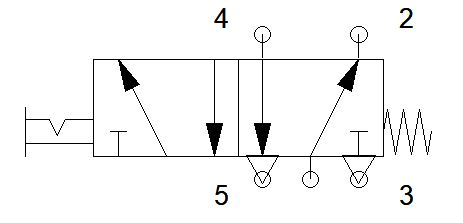 | 5/2 detent switch direction control valve |
 |
5/2 way valve spring return |

|
5/2 way valve |

|
And gate/Two pressure valve |
 |
OR gate/shuttle valve |
 |
check valve |
| 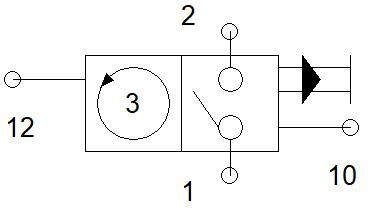 | Counter |
| 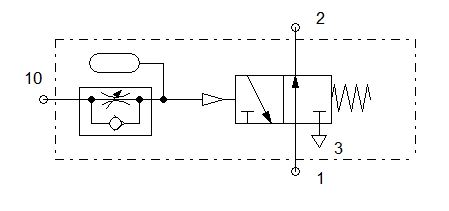 | Off delay timer |
| 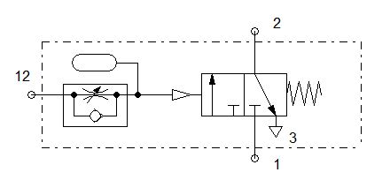 | On delay timer |

|
One way trip lever |

|
One way flow control valve |
 |
Quick Exhaúst Valve |
| 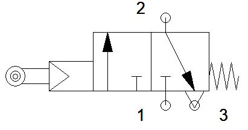 | Roller switch |
 |
Stepper module |

In this basic circuit 3/2pushbutton operated normally closed valve is used as a signal elements then single acting spring return signal is used as drive elements. When pushbutton is pressed cylinder extends and as long as button is pressed the cylinder remains in extended position. As soon as button is released cylinder retracts to its home position. This circuit can be used where there is no logic circuit and only manual pushbutton is used for actuating the cylinder.

In this circuit 5/2 detent switch operated valve is used as a signal element and double acting cylinder is connected to it. Here normally cylinder is retracted to home position. As detent switch is rotated cylinder extends and remain in that position until detent switch is again rotated to its original position. This circuit can be used where you want to lock cylinder in its extended position.

In this ciruit if you see clearly it's same as for double acting cylinder circuit, the difference is that flow control valve is added betweeb valve and cylinder. This is for reducing the cylinder speed. It is One way flow control valve, used for controlling cylinder speed.
 When air going in the cylinder is controlled then the one flow control valve is called
meter in.
When air going in the cylinder is controlled then the one flow control valve is called
meter in.
 When the air going out of the cylinder is controlled then the one way flow control valve is
called meter out.
When the air going out of the cylinder is controlled then the one way flow control valve is
called meter out.
For Indirect controlling cylinder or any other actuator, we use pneumatically actuated valves their advantages are as follow:
It has three port, 2 for input and 1 for output signal. This valve actuates only when pressure is availabel at both the sides. It is also known as two pressure valve
It has three port, 2 for input and 1 for output signal. This valve give output signal only when pressure is available at either one of its side. It is also known as shuttle valve.
A roller switch is a type of proximity sensor which is used to detect the cylinder positions. Roller switches are used for automating the process. In this circuit roller switch operated 3/2 normally closed valve is used to detect the cylinder most extended position. Psuhbutton is pressed the 5/2 valve is actuated and cylinder extends. As soon as piston reaches to most extended position the roller switch is actuated and it generates signally causing cylinder to retract cylinder automatically. This type of circuit is used when we want to automate the ciruit. The condition be like if we press the button the cylinde must extend and as it extends to forward most position it must retract automatically.
In this circuit 2 roller switch valves are used to create a automated circuit. Once the button is pressed cylinder extends and then the roller switch 'A1' is activated. This causes cylinder 2 to extend and roller switch 'B1' extends. And relatively first cylinder retracts. As 'A0' retracts to home position second cylinder also retracts. This kind of circuit can used where two cylinders have to be operated and second cylinder follows third cylinder.
Look at the circuit below and interpret.

In this circuit roller switch is used to retract the cylinder with on delay pneumatic timer When cylinder is extended then 'A1' roller switch is activated. Then timer gets the signal for actuation. In ondelay timer there is a oneway flow control valve installed. That ensures that the time set for filling the reservoir is achieved. The controlled flow of pneumatic air is filled in reservoir and then once it is filled then the valve is activated and signal is achieved after set time delay. In on delay timer the valve is normally closed.
In this circuit motor rotates by default. When pushbutton is pressed then the motor
stops after the time set in the timer. The reservoir fills and then the valve actuates generating signal. In off delay timer the valve is normally open.